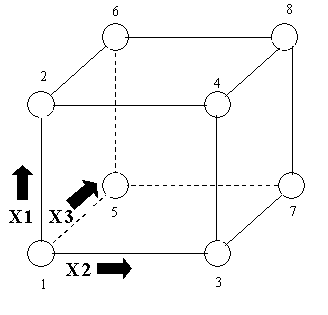

|
5.
Process Improvement
5.3. Choosing an experimental design 5.3.3. How do you select an experimental design? 5.3.3.3. Full factorial designs
|
|||||||||||||||||||||||||||||||||||||||||
| Description | |||||||||||||||||||||||||||||||||||||||||
| Graphical representation of a two-level design with 3 factors |
Consider the two-level, full factorial design for three factors, namely
the 23 design. This implies eight runs (not counting
replications or center point runs). Graphically, we can represent
the 23 design by the cube shown in Figure 3.1. The arrows
show the direction of increase of the factors. The numbers `1' through
`8' at the corners of the design box reference the `Standard Order' of
runs (see Figure 3.1).
 |
||||||||||||||||||||||||||||||||||||||||
| The design matrix |
In tabular form, this design is given by:
|
||||||||||||||||||||||||||||||||||||||||
| Standard Order for a 2k Level Factorial Design | |||||||||||||||||||||||||||||||||||||||||
| Rule for writing a 2k full factorial in "standard order" | We can readily generalize the 23 standard order matrix to a 2-level full factorial with k factors. The first (X1) column starts with -1 and alternates in sign for all 2k runs. The second (X2) column starts with -1 repeated twice, then alternates with 2 in a row of the opposite sign until all 2k places are filled. The third (X3) column starts with -1 repeated 4 times, then 4 repeats of +1's and so on. In general, the i-th column (Xi) starts with 2i-1 repeats of -1 folowed by 2i-1 repeats of +1. | ||||||||||||||||||||||||||||||||||||||||
| Example of a 23 Experiment | |||||||||||||||||||||||||||||||||||||||||
| Analysis matrix for the 3-factor complete factorial |
An engineering experiment called for running three factors; namely,
Pressure (factor X1), Table speed (factor
X2) and Down force (factor X3), each
at a `high' and `low' setting, on a production tool to determine which had
the greatest effect on product uniformity. Two replications were run at
each setting. A (full factorial) 23 design with 2 replications
calls for 8*2=16 runs.
The block with the 1's and -1's is called the Model Matrix or the Analysis Matrix. The table formed by the columns X1, X2 and X3 is called the Design Table or Design Matrix. |
||||||||||||||||||||||||||||||||||||||||
| Orthogonality Properties of Analysis Matrices for 2-Factor Experiments | |||||||||||||||||||||||||||||||||||||||||
| Eliminate correlation between estimates of main effects and interactions |
When all factors have been coded so that the high value is "1" and
the low value is "-1", the design matrix for any full (or suitably
chosen fractional) factorial experiment has columns that are all
pairwise orthogonal
and all the columns (except the "I" column) sum to 0.
The orthogonality property is important because it eliminates correlation between the estimates of the main effects and interactions. |
||||||||||||||||||||||||||||||||||||||||